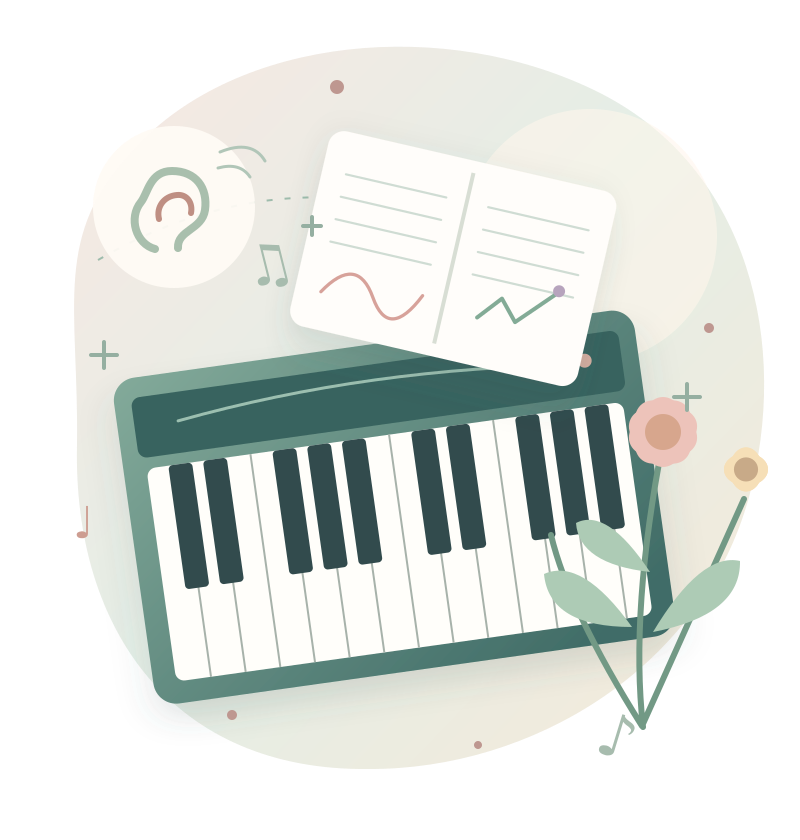

A LITTLE ESSAY FOR PIANO TEACHERS
ピアノを教える、すべての人へ。
「学ぶ」とは何か。
昨日まで聴こえなかった音が、
今日、聴こえるようになる。
そのとき、何が変わったのでしょう。

notice.grow.学んだとき、
人の中では何が起こる？
「学ぶ」は、情報を受け取ることだけでも、手順を真似することだけでもありません。新しい経験によって、世界の捉え方や自分の行動が変わっていくこと。その内側を、ピアノのレッスンから考えてみます。
最初に三つの問いを置きましょう。
レッスン中に弾けたら、「学んだ」と言えるのでしょうか。
何度も練習しているのに身につかないとき、何が起きているのでしょう。
先生がいなくても、自分で学び続けられる人は何を持っているのでしょう。
学びの正体を探ることは、レッスンの意味を問い直すことにもつながります。
LEARNING AS CHANGE
学びは「覚える」ことより、
「変わる」こと。
子どもが新しい音を覚えたとき、私たちは「学んだ」と言います。でも、その子が翌日にも音を思い出し、鍵盤の上で探し、音の違いを聴いて判断できたとしたら、そこにはもう少し大きな変化が起きています。
学びは、情報を受け取った瞬間ではなく、経験を通して、その後の見方・聴き方・行動の可能性が変わっていく過程だと捉えられます。
昨日は先生の指を追っていた生徒が、今日は「この音、違う気がする」と自分の耳で気づく。その小さな違いこそ、学びを考える出発点です。
説明を聞いた
真似して弾けた
違いに気づく
自分で選び直せる
学習そのものを直接観察するのは難しく、持続性や応用を含む複数の行動から推定します。
レッスン後、生徒には「何が残ったか」。
FOUR DIMENSIONS OF MUSIC LEARNING
学んだものは、
一つではない。
ピアノが弾けるようになるとは、指だけが上達することではありません。音符の意味を理解すること、響きを聴き分けること、身体を調整すること、音楽的に選び取ることが、互いに結びついていきます。
例えば、スタッカートが弾ける生徒にも違いがあります。音を短くする記号を知っているのか、響きの終わりを聴き取れるのか、手の動きを調整できるのか、曲にふさわしい長さを選べるのか。どれも大切ですが、同じ能力ではありません。
※ 本稿の概念整理。4要素は独立した脳領域を示すものではなく、相互に影響します。
「弾けない」という言葉の背後には、どの働きがまだつながっていないかという問題があります。「学ぶ」とは、ただ要素を増やすだけでなく、それらの関係を作り直すことでもあるのでしょう。
PRIOR KNOWLEDGE SHAPES LEARNING
新しい知識は、
まっさらな頭に入らない。
学ぶ人は、何も知らない空の器ではありません。これまでに見たもの、聴いたもの、身体で経験したことを手がかりに、新しい出来事を解釈します。
たとえば「強く弾く」を「腕を固める」と理解している子に、ただ「もっと脱力して」と言っても、なぜそうするのかわからないかもしれません。新しい説明が、以前からある理解とぶつかっているからです。
ここで必要なのは、正しい答えを繰り返すことだけではありません。生徒が今どのように考えているかを引き出し、その理解を修正できる経験を用意することです。学習科学の参考資料 ↗
これは授業づくりのための例示であり、全ての生徒に共通する原因ではありません。
LISTENING, EXPECTING, IMAGINING
音を聴くとは、
ただ聞こえることではない。
音楽を学ぶとき、私たちは鳴った音だけを受け取っているのでしょうか。メロディーを知っている人は、次の音や和音の行き先を予想することがあります。自分の演奏を聴きながら、期待した響きと実際の響きを照らし合わせることもあります。
さらに、音を鳴らさずにフレーズを思い浮かべる「内的聴覚・音楽的イメージ」は、演奏を考えるうえで重要な視点です。研究でも、楽譜・音の知覚・運動の表象の関係が論じられています。ただし、頭の中の音の鮮明さには個人差があり、鮮明であることだけで音楽力全体を判定できるわけではありません。音楽認知のレビュー ↗
実際の認知過程はもっと複雑です。内的聴覚の能力は人によって異なり、単一の訓練やテストで一律に測れるものではありません。
「次の1音は、どんなふうに聴こえそう？」
WHAT AN ERROR CAN TEACH
間違いは、
学びの入口になりうる。
間違えた瞬間、学習者には「思った結果」と「実際の結果」の差が現れます。その差に気づき、理由を考え、試し直すことで、学びにつながる場合があります。
しかし、失敗すれば自動的に学べるわけではありません。怖くて身体が固まっていたり、何が違うのかわからなかったり、毎回ただ「違う」と言われたりするだけなら、必要な情報が得られないこともあります。
教師に求められるのは、失敗を責めず、何を確かめればよいかがわかる手がかりを渡すことです。「そこ、違うよ」の次に「音の高さ？ リズム？ 響き？ どれが気になる？」と視点を与えられるでしょう。
※「間違いをすべき」という意味ではありません。安全に試せる環境と、適切なフィードバックが前提です。
PRACTICE WITH A PURPOSE
練習した時間と、
学びの深さは同じではない。
長い時間ピアノに向かっても、ただ同じところを繰り返しているだけでは、どこが改善したか気づきにくいことがあります。反対に短い時間でも、目標を絞り、聴き、試し、確かめると、練習に手応えが生まれます。
学習科学では、時間を空けて学ぶ「分散学習」や、見ずに思い出してみる「検索練習」の有効性が、主に記憶や知識に関する多様な課題で示されています。ただし、これらの研究結果をそのまま演奏技能の全てに当てはめることはできません。学習法のレビュー ↗
音楽の練習でも、たとえば「4小節を毎日少しずつ」「楽譜を閉じて次の和音を言う」「弾く前に歌って確かめる」など、目的に合わせた工夫が考えられます。大切なのは、何のために繰り返しているかを本人が理解することです。
回数は数えられる。でも、何が変わったかが曖昧。
目的を決め、違いを確かめ、次の試行を調整する。
運動技能では練習量・練習内容・フィードバックなどが相互に関わります。ここは実践に向けた提案です。
RETENTION AND TRANSFER
今日の「できた」は、
本当の「身についた」？
レッスン中、先生が拍を取り、指の動きを助けているときには弾ける。でも翌日、一人になるとまた同じ場所で止まる。よくある出来事ですが、これは先生と一緒にできた事実まで否定するものではありません。
ここで分けたいのは、今この場の出来栄えと時間が経っても残る学習です。さらに、似た別の曲で使えるかどうかも、学びを考える手がかりになります。
支援を受けながら、今は弾ける
翌日や翌週にも、自分で再現できる
新しい曲でも、学んだ判断を応用できる
保持（retention）と転移（transfer）は、運動学習や学習科学で重視される評価の観点です。
「今弾けた？」だけでなく、「来週、一人で何ができそう？」
THE BODY IN LEARNING
音楽は、
身体でも学んでいる。
ピアノでは、音を聴くことと指・腕・身体を動かすことが常に関わり合います。頭でリズムを理解しただけでは、すぐにその通りに弾けるとは限りません。逆に、身体が動くことと、表現したい音を自分で選べることも同じではありません。
「脱力」のような言葉一つでも、動きの感覚、鍵盤から返る感触、実際に出た音を結びつける必要があります。脳の学習も、単一の場所だけで起きるものではなく、複数の機能やネットワークが関係する複雑な過程です。脳と学習の参考資料 ↗
動きを教えるときは、指の形だけを直すのではなく「弾いた結果、どんな音になった？」と聴覚へ戻ることも大切でしょう。
あくまで説明用の図。身体技能と知識・感性の関係を一つの経路に還元するものではありません。
MOTIVATION AND SAFETY
「学びたい」は、
命令だけでは生まれない。
「練習しなさい」と言われて始めた練習と、「昨日の音をもう一度出したい」と思って始めた練習では、同じ鍵盤を弾いていても、本人が感じる意味が違うかもしれません。
自己決定理論では、人の動機づけに関わる基本的心理欲求として、自律性・有能感・関係性が挙げられます。教育で大切なのは、自由放任でも過度な統制でもなく、選択肢と適切な支援、温かな関係を両立させることです。理論の参考資料 ↗
音楽を好きでいることと、難しい練習を避けることは同じではありません。挑戦の意味がわかり、小さな成長を感じ、失敗しても安心できることが、学びを支える条件になります。
自律性
自分で選べる「ここを良くしたい」
という意思がある。
有能感
進歩がわかる少し前の自分との
違いが見える。
関係性
安心して試せる挑戦を聴き取って
くれる人がいる。
LEARNING WITH OTHERS
学びは、一人の頭の中だけで
完結しない。
生徒は先生の演奏を聴き、友だちの音を受け取り、家族の反応に励まされ、ときには誰かの表現への違和感から新しい問いを持ちます。音楽は、とりわけ他者との関わりの中で学びが豊かになる領域です。
ただ、手本を真似すれば同じように感じられるわけではありません。伴奏に合わせて正確に弾けても、自分で拍を保つ力がまだ育ちきっていないこともあります。
他者による支援は大切です。そのうえで「先生の音のどこが好きだった？」「どこを自分らしく変えたい？」という問いによって、模倣から自分なりの理解へ移っていく余地が生まれます。
学びの経路は多様です。すべての生徒が同じやり方を好むわけではありません。
THE ART OF LEARNING BY ONESELF
学ぶ人は、やがて
自分の先生になる。
新しい曲を開いた生徒が、「ここは何が難しそう？」「どう練習しよう？」「今の音は思った通り？」と自分に問いかけられるとしたら、学びの主導権が少しずつ本人のものになっています。
メタ認知や自己調整学習は、自分の理解や行動を振り返り、目標と方法を調整する力に関わります。こうした力は、生まれつき固定されたものではなく、学習環境や働きかけによって発達しうると考えられています。参考文献 ↗
本稿では、学ぶ人自身の働きを五つに整理してみます。気づく → 問う → 試す → 聴き直す → 選び直す。これは特定の研究理論の公式な五段階ではなく、ピアノレッスンで使うために組み立てた概念モデルです。
自分の音・理解・違和感に耳を澄ます
なぜそうなったか、何を変えたいか考える
小さな仮説を持って弾いてみる
目指した音と実際の音を比べる
次の練習・表現を自分で決める
順序は固定ではありません。聴いてから気づくことも、試しながら問いを見つけることもあります。
いつか生徒が、先生のいないところで自分に問いかけられるように。
THE ESSENCE OF LEARNING
学ぶとは、
経験を通して、
自分と世界との関わり方が変わること。
学ぶとは、経験を意味づけ、自分の知識・感覚・行動・判断を組み替えながら、これまでできなかった理解や選択を少しずつ可能にしていく過程である。
ここで示した定義は本稿の考察です。学習科学の知見を手がかりにしながら、ピアノ教育に引き寄せてまとめました。
ピアノを学ぶことは、先生の言葉を覚えることだけではありません。自分の耳で違いを聴き、身体を調整し、音に意味を見つけ、もう一度やってみようとすることです。
そして学びは、必ずしも美しい右肩上がりではありません。わかったと思ったことが崩れ、また考え直すこともある。その時間も、学ぶことの一部なのかもしれません。
ONE LAST QUESTION
自分の頭の中で、
音楽を聴く力は、
どのように育っていくのだろう。
その音の鮮明さと、理解・表現・演奏の力には、どんな関係があるのでしょう。
まだ答えきれない問いだからこそ、学び続ける価値があります。
FURTHER READING
参考文献と、考察の位置づけ
研究に基づく一般的な知見と、筆者による教育観・レッスン例を区別して記述しています。図は説明用の概念図であり、特定の実験や神経活動の計測結果を表しません。
- 01National Academies (2018), How People Learn II — Learning and the Brain ↗
経験と脳の適応、複数のネットワークの相互作用。
- 02
- 03Dunlosky et al. (2013), Improving Students’ Learning With Effective Learning Techniques ↗
検索練習・分散学習などの学習法のレビュー。演奏技能に全面的に適用できるという意味ではありません。
- 04Self-Determination Theory — Applications: Education ↗
自律性・有能感・関係性と教育環境。
- 05Music performance as knowledge acquisition: a review and preliminary conceptual framework ↗
演奏における知識、音楽的イメージ、知覚と運動の関係。
- 06The influence of deliberate practice on musical achievement: a meta-analysis ↗
音楽における練習と達成の関連。練習だけで成果が決まることを示すものではありません。